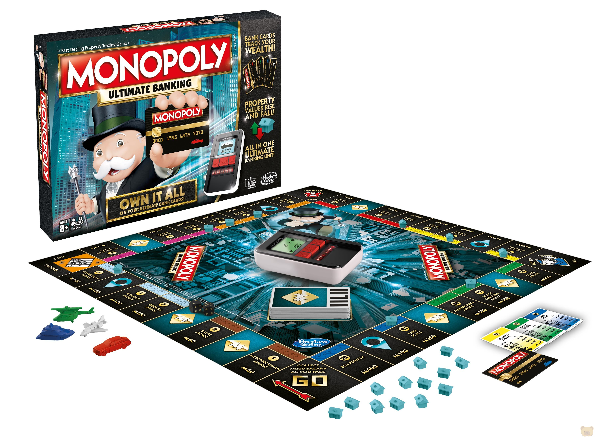

Un juego creado con la funcion de servir como una herramienta para enseñar las teorías acerca de la justicia social y económica extraidas del estudio titulado Progreso y Miseria de Henry George.
Comercializado por primera en el año de 1936
A lo largo de 80 años, el juego a sufrido una notable evolución. Sus múltiples ediciones y sus tantas versiones han dado pie a que se cambiara desde la caja que lo contiene hasta los elementos que lo componen. Logrando asi, mantenerse como el favorito a través de las décadas
Con los años la finalidad del juego cambió para solo disfrutar un buen rato, negociando propiedades y hasta haciendo uso de medios electrónicos para todas las transacciones que requiere el juego.